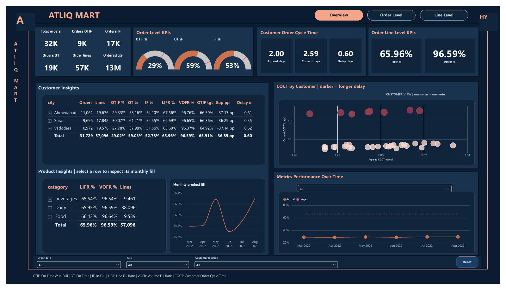
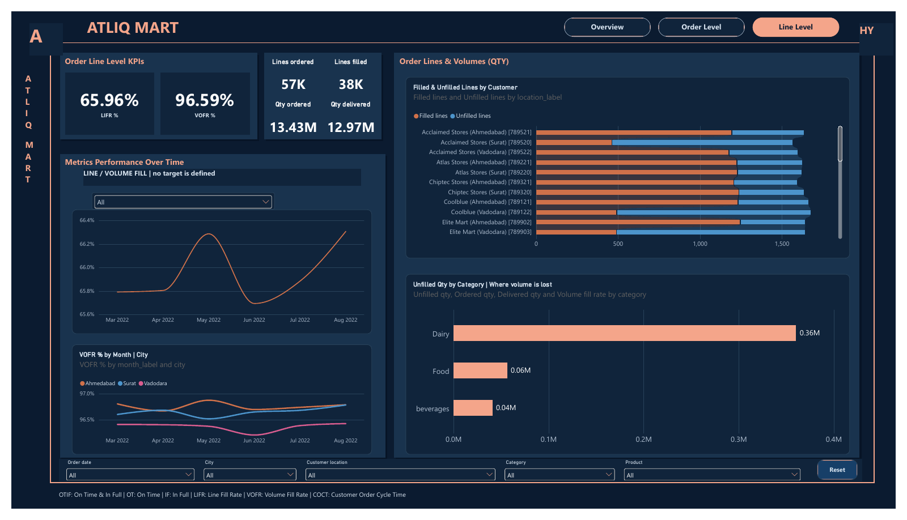

AtliQ Mart / Giai đoạn phân phối
Giao đúng hạn.
Giao đủ hàng.
Theo dõi chất lượng giao hàng ở Surat, Ahmedabad và Vadodara. Nhìn rõ khoảng cách giữa kết quả thực tế và cam kết với khách hàng trước khi mở rộng.
Báo cáo thực tế / Power BI
Nhìn dashboard trước khi mở tệp.

Overview · Bản chụp từ báo cáo, không tương tác. Mở PBIX trong Power BI Desktop để sử dụng bộ lọc.
Xem thêm Order Level và Line Level



01 / Vấn đề · Bằng chứng
Chất lượng giao hàng đang đe dọa kế hoạch mở rộng.
AtliQ Mart là nhà sản xuất FMCG tại Gujarat. Một số khách hàng quan trọng không gia hạn hợp đồng do hàng thiết yếu giao trễ hoặc thiếu. Dashboard giúp nhóm phân tích theo dõi OT (đúng hạn), IF (đầy đủ) và OTIF (cả hai) ở cấp đơn hàng, rồi đi sâu vào dòng hàng để khoanh vùng vấn đề.
Dữ liệu lịch sử phân tích theo ngày; repo chưa có pipeline cập nhật tự động hằng ngày hoặc log để khẳng định công đoạn nào gây thiếu hàng.
Dòng hàng giao đủ: 65,96% (LIFR). Tổng lượng giao / tổng lượng đặt: 96,59% (VOFR). Đây là hai cách đo khác nhau, không phải kết luận nguyên nhân.
02 / Nguyên nhân cần kiểm chứng
Dấu hiệu lớn nhất là giao đúng hạn nhưng thiếu hàng.
Trong 22.521 đơn không đạt OTIF, 9.522 đơn (42,28%) giao đúng hạn nhưng thiếu. Đây là nhóm cần điều tra trước; dữ liệu hiện tại chưa cho biết thiếu hàng phát sinh khi phân bổ, soạn hàng, vận chuyển hay khi nhận hàng.
Giao trễ vẫn chiếm 7.539 đơn (33,48%); 5.460 đơn (24,24%) vừa trễ vừa thiếu. Mỗi đơn chỉ thuộc một nhóm.
Loại trừ kết luận vội
Tỷ lệ dòng giao đủ 65,96% nhưng lượng giao đạt 96,59%. Số lượng tổng có thể che bớt thiếu hụt ở từng dòng.
Thu hẹp phạm vi
Dùng bộ lọc ngày, thành phố, khách hàng, sản phẩm để xác định nhóm đơn và mặt hàng có thiếu hụt lặp lại.
Cần thêm bằng chứng
Chưa có log tại các mốc phân bổ → soạn hàng → xuất kho → nhận hàng, nên chưa thể quy lỗi cho kho hay đơn vị vận chuyển.
Đo cả rủi ro đổi lỗi
Song song, theo dõi OT để tránh đổi lỗi: giảm đơn giao thiếu mà tăng giao trễ không phải là cải thiện dịch vụ.
03 / Giải pháp phân tích
Từ dữ liệu sẵn có đến kiểm chứng thực địa.
Dashboard Power BI chuyển dữ liệu giao hàng thành các tầng nhìn: tổng quan để phát hiện, cấp đơn để phân loại, cấp dòng hàng để khoanh vùng. Những tầng này chuẩn bị cho một pilot có điều kiện, không thay thế việc ghi log thực tế.
Phát hiện
Overview đo OT, IF, OTIF và khoảng cách với chỉ tiêu của 35 khách hàng.
Phân loại
Order Level tách đơn trễ, thiếu và lỗi kết hợp; xem thêm nhóm ngày trễ.
Khoanh vùng
Line Level đặt LIFR cạnh VOFR, so sánh số lượng đặt/giao và lọc theo sản phẩm, danh mục.
Kiểm chứng
Pilot A/B 10 ngày làm việc trên nhóm đơn có log; đối soát số lượng tại từng mốc trước khi xuất kho.
04 / Bắt đầu
Mở báo cáo, không cần build.
Dùng Power BI Desktop tương thích với tệp PBIX; phiên bản không được khóa trong repo. Dùng phần mềm hỗ trợ PPTX để xem bản đề xuất.
- Sao chép repo.
git clone https://github.com/lengominhhuy510-maker/Supply-chain-FMCG-distribution-dashboard.git cd Supply-chain-FMCG-distribution-dashboard
- Mở
SupplyChain_Design_Dashboard.pbixtrong Power BI Desktop; xem Overview, Order Level và Line Level. - Lọc thành phố, khách hàng và ngày; đối chiếu bảng CSV trong
Dataset/. Nếu Refresh yêu cầu đường dẫn, trỏ về CSV tương ứng trong thư mục này. - Đọc
atliq-service-recovery-board-proposal.pptxđể xem đề xuất pilot đối soát số lượng.
05 / Trong repo
Nguồn dữ liệu & đầu ra.
| Thành phần | Vai trò |
|---|---|
| Dataset/ | 4 bảng chiều (khách hàng, ngày, sản phẩm, chỉ tiêu), 2 bảng sự kiện (đơn, dòng hàng). |
| SupplyChain_Design_Dashboard.pbix | Báo cáo Power BI ba trang, lọc và so sánh chỉ tiêu dịch vụ. |
| atliq-service-recovery-board-proposal.pptx | Tóm tắt bằng chứng và đề xuất pilot; không khẳng định nguyên nhân thiếu hàng. |
| README.md / README.en.md | Tài liệu Markdown tiếng Việt và tiếng Anh để đọc trên GitHub. |
Thử nhanh dữ liệu nguồn bằng Python 3 (thư viện chuẩn):
python -c "import csv; r=list(csv.DictReader(open('Dataset/fact_orders_aggregate.csv', encoding='utf-8-sig', newline=''))); ok=sum(int(x['otif']) for x in r); print(f'{ok:,} / {len(r):,} = {ok/len(r):.2%} OTIF')"
# 9,208 / 31,729 = 29.02% OTIF06 / Tiếp theo
Đo đúng trước khi can thiệp.
- Dashboard ba trang và sáu bảng dữ liệu nguồn.
- Đề xuất kiểm tra giao thiếu trước khi mở rộng.
- Thiết lập cập nhật dữ liệu định kỳ và kiểm tra chất lượng.
- Ghi log số lượng qua phân bổ → soạn hàng → xuất kho → nhận hàng để kiểm chứng nguyên nhân.
Đóng góp qua issue / pull request kèm bước tái hiện và ảnh hưởng đến chỉ số. Repo chưa có tệp LICENSE; không mặc định dữ liệu được cấp phép dùng lại.